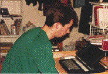
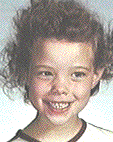

|
|
Each of the names is a link leading to more information, or you can just browse.
|  |
Rob is sort of the founder of Gracies Dinnertime Theatre. While at the Rochester Institute of Technology in 1992, Rob and Sean Hammond met and often exchanged ideas. Topics ranged from practicle to esoteric. Many of these ideas were discussed while at dinner in the Grace Watson Dinning Hall, known to the students as "Gracies."
It was here that Rob mentioned that they, and a small group of students that were often subjected to Rob and Sean Hammond's rantings, should start a half hour radio show called "Gracies Dinnertime Theatre" to be aired on the campus radio station.
Equipment constraints and loss of spontaneity caused the idea to be classified as "impracticle" and was all but forgotten.
Rob transfered from RIT to the Art Institute of Pittsburg, graduated, and remains in touch.
Sean was one of the "original" members of Gracies Dinnertime Theatre before it appeared in a written format (see information on Robert McKay). After Robert McKay transferred from the Rochester Institute of Technology, Sean was left with a head full of ideas and no one to share them with. In time, he met and became friends with Kelly Gunter and Marc Trzepla. It was to these people that Sean would " spew" his ideas.
When the three finally decided to write up a series of humor articles for the on campus newsmag, The Reporter, Sean vetoed the name "Pi3" in favor of "Gracies Dinnertime Theatre."
Sean has since graduated with a BS in Biotechnology, and had a job in Biotechnology Pergatory. He continues to write for GDT.
Sean's home page can be visited at: www.rit.edu/~sth8884


Kelly Gunter
(aka: the bare-foot girl)
Along with Sean Hammond and Marc Trzepla, Kelly was one of the orginal authors of "Gracies Dinnertime Theatre." In fact, the first issue "Ethopian Flypaper Boy" was her brain child.
When GDT was rejected from the Rochester Institute of Technology's newsmag, The Reporter, by Kerstin Gunter (Kelly's oldest sister), it was Kelly's idea to begin printing without affiliation to any group.
Kelly graduated with a degree in Ceramics, and has gone on to get her Masters in Applied Mathematics. She continues to write for GDT.
If it were not for Marc's interest in why Sean Hammond and Kelly Gunter were always laughing, "Gracies Dinnertime Theatre" might never have been born. A part of the original three, Marc's illustrations and energy really molded GDT into it's present form.
When Sean Hammond, Kelly Gunter and Marc decided to write a humor column for the Rochester Institute of Technology's campus newsmag, The Reporter, Marc first suggested the name "Pi3" based on the fact that when Marc, Kelly Gunter, and Sean Hammond stood shoulder to shoulder, their heads formed a straight line, vaguely resembling the symbol for pi.

|
The idea of the three "founders" standing together evolved into GDT's logo.
Marc graduated from RIT, got a job, and quickly disappeared from the map. Hey Marc, if you're reading this, drop a line, huh?
Mark knew Sean Hammond long before Gracies Dinnertime Theatre actually became a written reality. Though not a member of the "original" GDTers along with Robert McKay, Mark's sense of humor and intelligence made him a prime candidate to be blasted with ideas from Sean Hammond.
Like Robert McKay, Mark transfered from the Rochester Institute of Technology, but remained in the Rochester area.
As soon as GDT was being printed, Sean Hammond suggested that Mark should write something for them to print. Finally, Mark jotted down a rough draft of "A Talk with Thor" for Sean Hammond and Kelly Gunter to finish. Later, Mark wrote a short song, "Christian Youth" for Sean Hammond which found it's way into a GDT issue.
Sean Hammond first met Troy in a Metaphysics of Death class at the Rochester Institute of Technology. At the same time Kelly Gunter met Troy and a mutual friend and cooked them both dinner. After two interactions between Troy and Kelly Gunter in the forum of her friend's apartment communications between them were
severed. Kelly Gunter's friend had graduated and moved away. A couple of months later Kelly Gunter determined that she had to unite the humor of Troy, Sean Hammond, and herself. Eventually she called Troy, feeling like she, "was asking him out on a blind date," and invited him to join herself, Sean Hammond and Marc Trzepla in their weekly viewing of "Red Dwarf".
After several visits by Troy, Sean Hammond, Kelly Gunter, and Marc Trzepla enjoyed his company, humor, and intellect enough to recruit him for GDT.
Troy's first issue was "Anti-Theft Children" (it's also interesting to note that the GDT logo first appeared in this issue as well as a quick comment: "GDT: More fun than socks with eyes." The "Socks with eyes" comment came from the Red Dwarf episode featuring Mr. Flibble).
You can see Troy's homepage at http://www.rit.edu/~tbl2788
During a "Philosophy of Religion" course at the Rochester Institute of Technology, Sean Hammond and Kelly Gunter met Heather. It wasn't until the question "What proof would you need to be convinced of the existance of the Lock Ness Monster" asked by the instructor, to which Heather answered "His corpse washed up on the beach," did Sean Hammond and
Heather has since spent a great deal of time helping out GDT's first spin off: The Melancholy Predator.
The newest member of GDT, Sean Hammond first met Ben in a Molecular Biology in 1994. Though interesting, Sean Hammond failed to follow up the acquantience. It wasn't until Sean Hammond and Ben happened to be at an audition that Sean Hammond passingly made a comment about GDT. At this minor prompting, Ben made a quick pitch for some ideas.
A few weeks later, Ben was responsible for several poems, the multi-part story "The Sandwich," and had a major hand in the writing of the issue "Incest".
Ben's latest work is The Melancholy Predator, a spin off of GDT. It appears along with GDT on a weekly basis.
You can see Ben's home page at http://www.rit.edu/~bjl4009